class: center, middle, inverse # Usando a quarta dimensão: visualização de dados com gráficos animados .center[Ciclo de Palestras .coral[●] julho / 2019 <br/> .small[.goldenrod[De servidor para servidor]]] .center[] --- # A gramática de gráficos Conceito baseado no trabalho de Leland Wilkinson: *"The Grammar of Graphics"*. .center[] Diversas ferramentas de visualização de dados se baseiam nesse conceito, tais como **ggplot2**, **Vega-Lite/Altair** e **Tableau**. --- # A gramática de gráficos De forma simplificada, a ideia central é de que um gráfico é um .destaque[mapeamento]:  --- # A gramática de gráficos — um exemplo simples 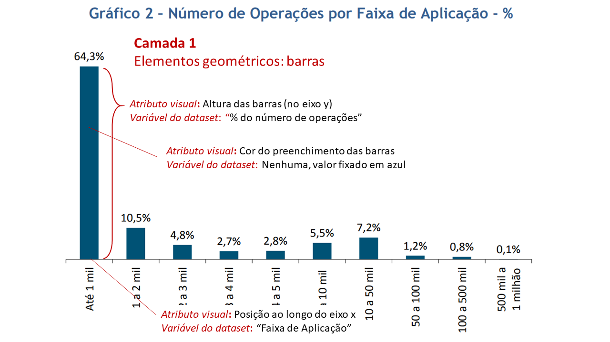 --- # Animando as coisas... E se mapeássemos uma das variáveis do dataset para... o TEMPO?  --- # O espaço-tempo! .center[] --- # Como fazer? Que tal uma ferramenta .riscado[cara, sofisticada, pesada e complexa] gratuita, simples, leve (em mais de um sentido) e ainda por cima... querida .red[❤]? --- # Como fazer? Que tal uma ferramenta .riscado[cara, sofisticada, pesada e complexa] gratuita, simples, leve (em mais de um sentido) e ainda por cima... querida .red[❤]? .center[] --- # (Ah, os anos 90...) .center[    ] --- # Animações para visualização de dados * As animações permitem .red[condensar diversos gráficos] num único objeto. * Além disso, muitas vezes ajudam a .red[chamar a atenção] e a .red[dar mais... "dramaticidade"] à informação sendo apresentada, por criar na audiência uma expectativa, um certo suspense a respeito do que vai acontecer logo depois — reflexão, especulação. * As pessoas tendem a achar gráficos animados mais .red["divertidos e cativantes"] (<em>Effectiveness of Animation in Trend Visualization</em>, de Robertson et al, <em>Animated Transitions in Statistical Data Graphics</em>, de Heer e Robertson) — embora outras pessoas achem esses gráficos mais .red["confusos"]. * A principal desvantagem é o fato de a retenção de informações específicas ser menor, por ser difícil acompanhar tudo o que está acontecendo no gráfico. --- # Animações para visualização de dados Mas... > "Even though our job is to visualize the data, it is not actually the precise numbers what is going to stick on our readers' minds. Instead, it's kind of the analysis that we've done, the .destaque[story we're telling and how we made them feel], that they'll remember." >-- Shirley Wu, Visualization Jedi Grandmaster A perda da precisão e dos detalhes pode ser compensada por meio do uso de .red[recursos visuais], ou por meio de outras .red[visualizações] e .red[histórias de dados] (e, nesse caso, a animação seria justamente o chamariz para a história completa). --- # Exemplo 1 - o gif .center[] --- # Exemplo 1 - o complemento 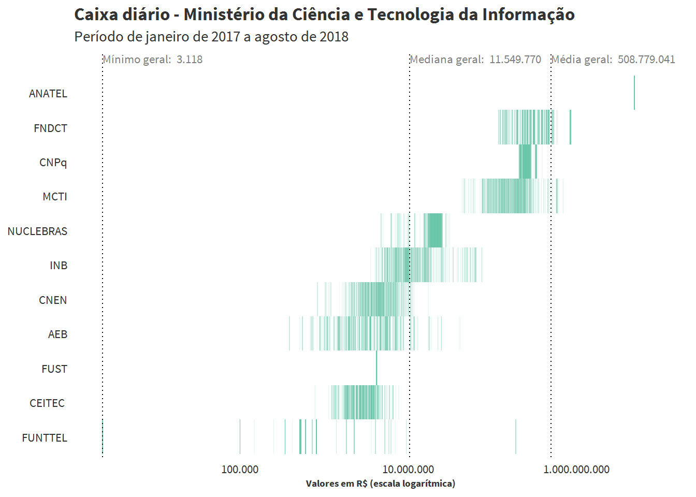 --- # Exemplo 1 - o complemento <img src="caixa_diario.png" style = "width: 90%;"> --- # Exemplo 2 - o gif .center[<img src="caixa_obrig.gif" style = "width: 70%;">] --- # Exemplo 2 - o complemento .center[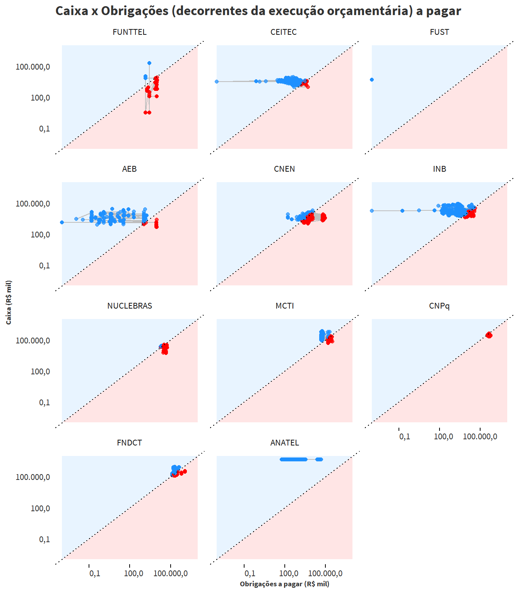] --- # Exemplo 3 - os gifs <div style="display: flex;"> 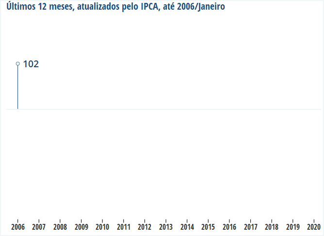 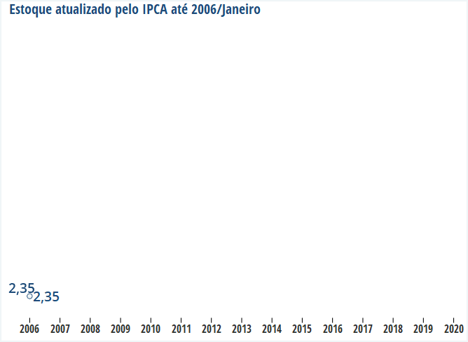 </div> --- # Exemplo 3 - o complemento .center[<a href="https://www.tesourotransparente.gov.br/historias/entendendo-os-graficos-resultado-primario-e-estoque-da-divida-publica-federal" target="blank">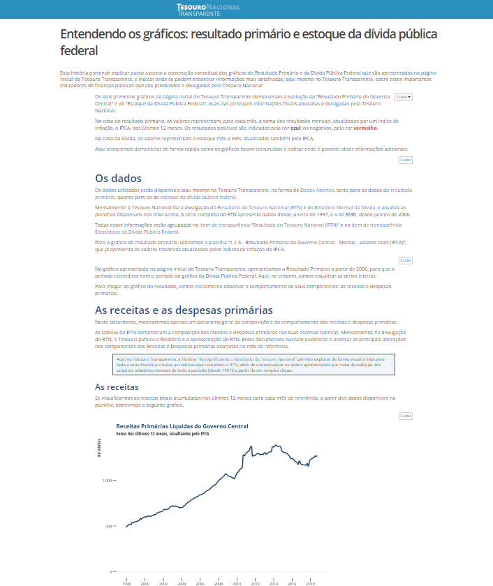</a>] --- # Exemplo 4 - o gif .center[] --- # Exemplo 4 - o gif (repercussão) .center[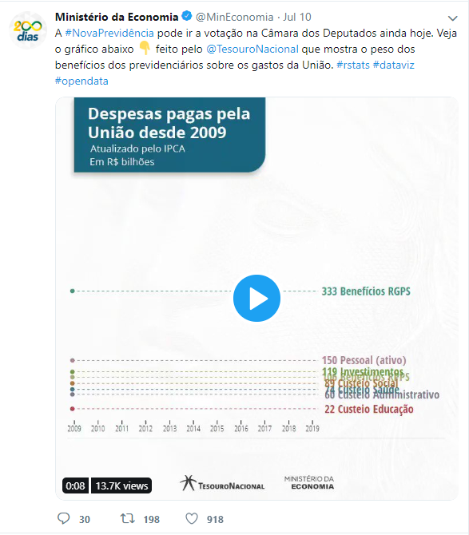] .center[https://twitter.com/MinEconomia/status/1149048156996460545] --- # Exemplo 4 - outro gif .center[] --- # Exemplo 4 - um complemento .center[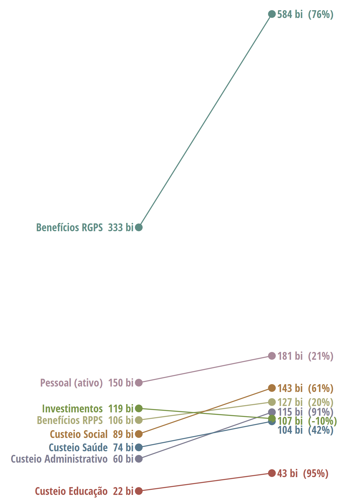] --- # Exemplo 5 - os gifs .center[] --- # Exemplo 5 - os gifs .center[] --- # Exemplo 6 - o gif .center[] --- # Exemplo 6 - um complemento .center[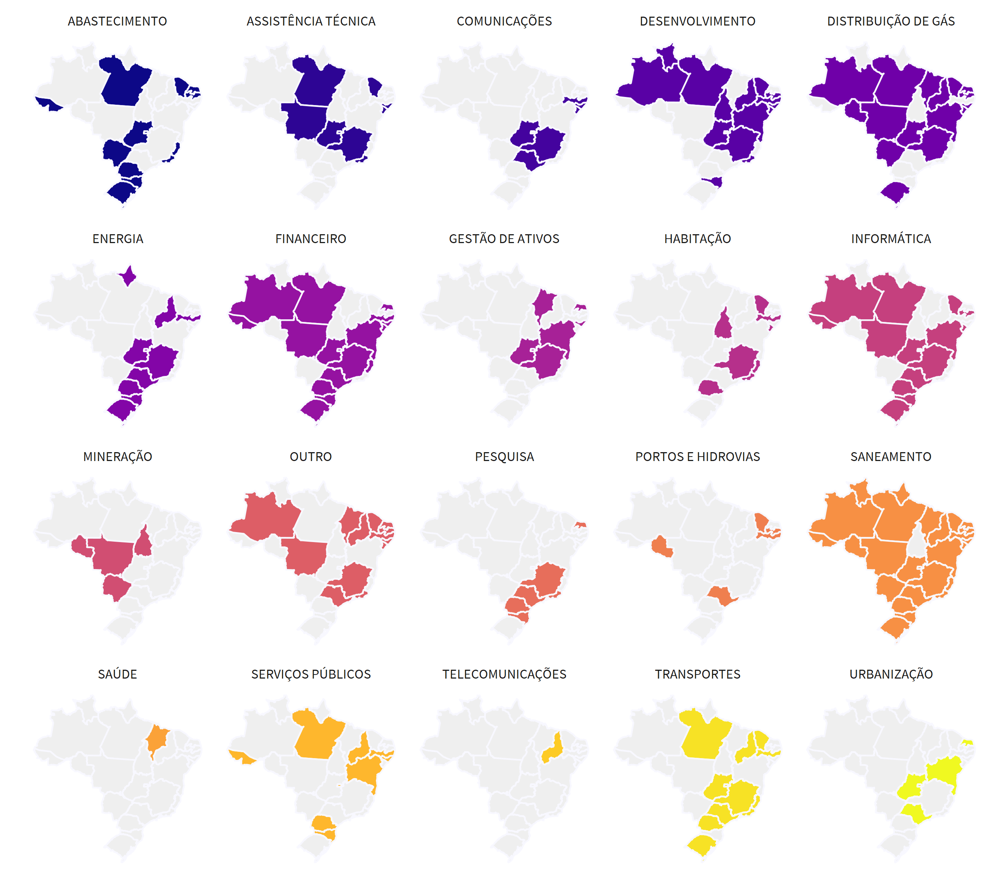] --- # Exemplo 6 - um outro complemento .center[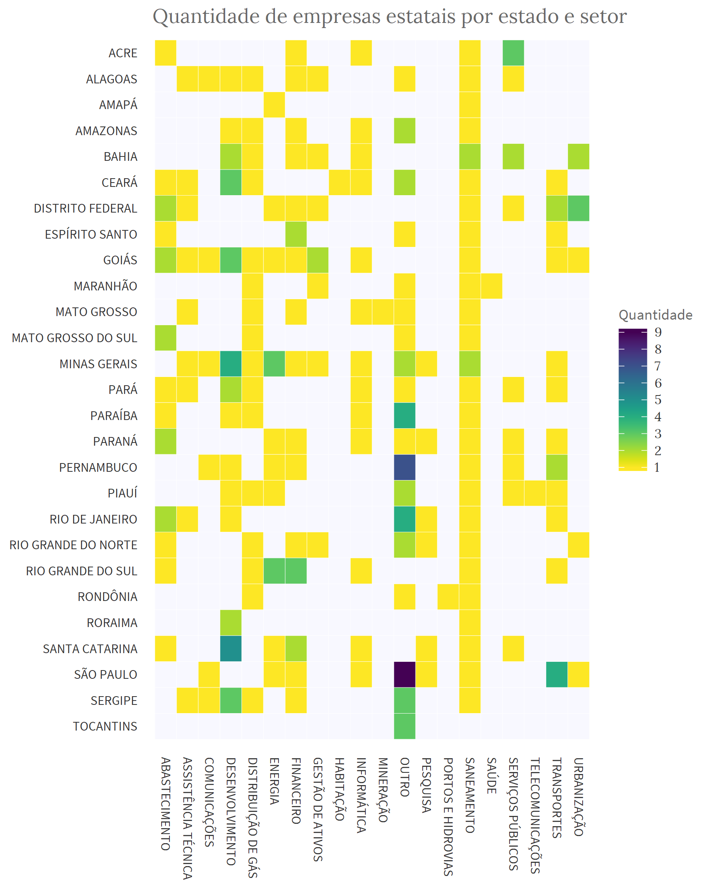] --- # Exemplo 6 - mais complementos... <div style="display: flex; align-items: start; justify-content: space-between;"> 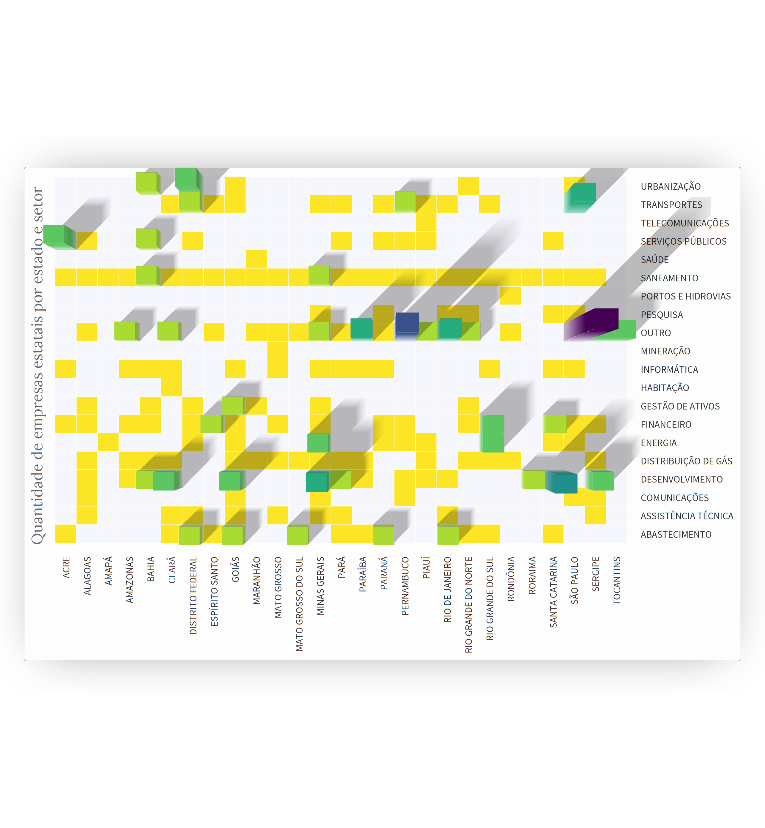 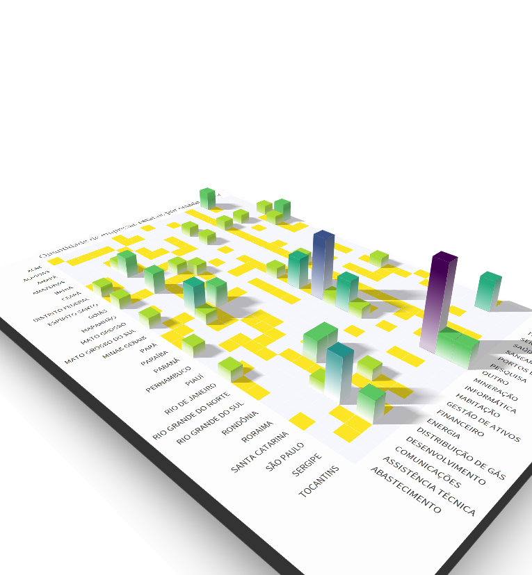 </div> --- # Exemplo 6 - ops! .center[<video src="heatmap1.mp4" autoplay="true" loop="true" muted="true">Só um experimento</video>] --- # Exemplo 7 - o gif .center[] --- # Referências e recursos <strong>Artigos científicos</strong> * Effectiveness of Animation in Trend Visualization by Robertson et al (https://www.cc.gatech.edu/~stasko/papers/infovis08-anim.pdf) * Animated Transitions in Statistical Data Graphics by Heer and Robertson (http://vis.berkeley.edu/papers/animated_transitions/2007-AnimatedTransitions-InfoVis.pdf) * Enhancing Information Visualization with Motion by Bartram (http://citeseerx.ist.psu.edu/viewdoc/download?doi=10.1.1.21.5486&rep=rep1&type=pdf) <strong>Outros</strong> * Uma ferramenta para construir animações sem necessidade de programação: https://flourish.studio/blog/ * Episódio do podcast <em>Policy Viz</em>, com John Burn-Murdoch, do Financial Times, sobre gráficos animados (embora trate principalmente de um tipo de gráfico animado, as chamadas "corridas de gráfico de barras"): https://policyviz.com/podcast/episode-155-john-burn-murdoch/ --- <strong>Homenagem obrigatória:</strong> o pioneiro! .center[] https://www.ted.com/speakers/hans_rosling --- class: inverse # Obrigado! Tiago Maranhão Barreto Pereira STN / GT-CEAD </br> Grupo Técnico de Comunicação Estratégica e Análise de dados <a class = "links" href = "mailto:gt-cead@tesouro.gov.br" target = "blank">`gt-cead@tesouro.gov.br`</a> <a class = "links" href = "http://www.tesourotransparente.gov.br" target = "blank">`www.tesourotransparente.gov.br`</a> <a class = "links" href = "http://tchiluanda.github.io" target = "blank">`tchiluanda.github.io`</a> .right[Todos os gifs foram feitos em .coral[`R`] com o pacote .coral[`gganimate`]] .right[Apresentação feita com .coral[<a class = "links" href = "https://github.com/gnab/remark" target = "blank">`remark.js`</a>]]